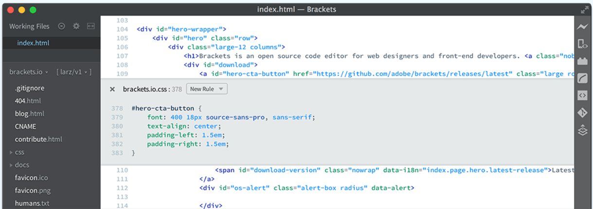

With focused visual tools and preprocessor support, Brackets is a modern text editor that makes it easy to design in the browser. It's crafted from the ground up for web designers and front-end developers.
Other downloads Brackets is a lightweight, yet powerful, modern text editor. We blend visual tools into the editor so you get the right amount of help when you want it without getting in the way of your creative process. You'll enjoy writing code in Brackets.
Brackets is an open-source project, supported by an active and passionate community. It's made by other web developers like you! Learn How to Contribute…
Instead of jumping between file tabs, Brackets lets you open a window into the code you care about most.
Get a real-time connection to your browser. Make changes to CSS and HTML and you'll instantly see those changes on screen.
Work with preprocessors in a whole new way. We know how important preprocessors are to your workflow.